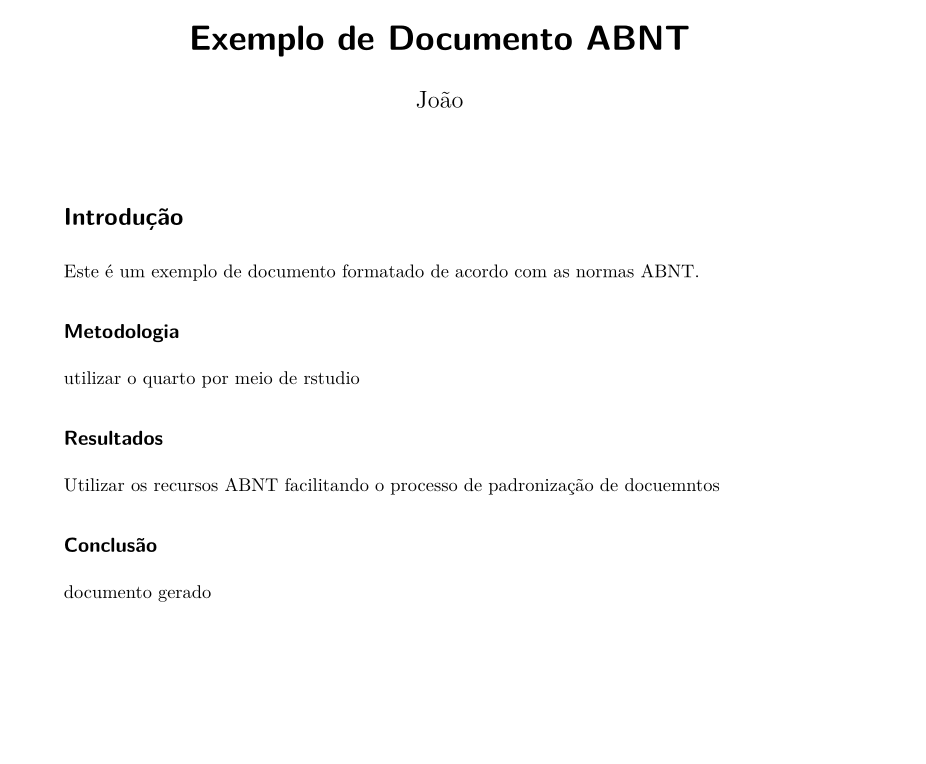

E aí, pessoal! Se você já passou horas (ou dias!) lutando com a formatação de um trabalho acadêmico seguindo as normas da ABNT, sabe como isso pode ser um verdadeiro pesadelo. Margens, fontes, citações, referências… Ufa! É tanta coisa que às vezes a gente até esquece do mais importante: o conteúdo do trabalho.
Pensando nisso, eu criei uma extensão para o Quarto que vai facilitar (e muito!) a sua vida na hora de formatar documentos acadêmicos. Quer saber como ela funciona e como você pode usá-la? Vem comigo que eu te explico tudo!
Imagine uma ferramenta que faz toda a formatação chata do seu trabalho automaticamente, enquanto você foca só em escrever. Pois é, essa extensão faz exatamente isso! Ela é como um “assistente pessoal” para quem precisa seguir as normas da ABNT.
Ela vem com:
Um template LaTeX que já deixa tudo no jeito: margens certinhas, fontes adequadas, títulos e seções formatados.
Um estilo de citação (CSL) que cuida das referências bibliográficas, seguindo direitinho as regras da ABNT.
Um exemplo prático para você ver como funciona e já começar a usar sem enrolação.
Ou seja, é praticamente um “ctrl+c, ctrl+v” da formatação ABNT. 😉
Vou te dar alguns motivos para você ficar animado(a) com essa extensão:
Economiza Tempo:
Padronização Garantida:
Fácil de Usar:
Personalizável:
Vou te explicar direitinho como começar a usar essa extensão. É tão fácil que você vai se perguntar por que não fez isso antes!
Clone o Repositório:
Abra o terminal e digite:
bash
Copy
git clone https://github.com/juauzz/extensionABNT.gitCopie para o Seu Projeto:
No seu projeto Quarto, crie uma pasta chamada _extensions (se ainda não tiver).
Copie a pasta extensionABNT para dentro de _extensions.
A estrutura do seu projeto vai ficar assim:
Copy
/meu-projeto-quarto
/_extensions
/extensionABNT
/examples
- example.qmd
/templates
- abnt-templates.tex
- abnt.csl
- _extension.yml
- README.md
- meu-documento.qmdNo seu arquivo .qmd, adicione a extensão ao formato PDF:
yaml
Copy
---
title: "Meu Documento ABNT"
author: "Seu Nome"
format:
pdf:
extensions: [extensionABNT]
---Agora é só renderizar o documento. No terminal, digite:
bash
Copy
quarto render meu-documento.qmd --to pdfE pronto! Seu documento vai sair formatadinho, seguindo todas as normas da ABNT. 😎
Se você é do tipo que gosta de ver para crer, na pasta examples tem um arquivo example.qmd que já está pronto para usar. Para renderizá-lo, é só rodar:
bash
Copy
quarto render examples/example.qmd --to pdfDepois é só abrir o PDF e ver como ficou. Spoiler: vai ficar show de bola! 😉
Se você quiser fazer ajustes no template ou no estilo de citação, é super fácil:
Template LaTeX: O arquivo templates/abnt-templates.tex pode ser editado para mudar margens, fontes, formatação de títulos, etc.
Estilo de Citação: O arquivo abnt.csl define o estilo das referências. Se precisar de algo diferente, é só trocar por outro arquivo CSL.
Se você gostou da extensão e quer ajudar a melhorá-la, fique à vontade para contribuir! Pode ser reportando um bug, sugerindo uma melhoria ou até enviando um código novo. É só abrir uma issue ou enviar um pull request. Todo mundo ganha quando a gente colabora, né?
Essa extensão é open-source e está sob a MIT License. Isso significa que você pode usar, modificar e compartilhar à vontade. Só não esquece de dar os créditos, hein? 😉
E aí, curtiu? A Extensão ABNT para Quarto foi feita para tirar um peso das suas costas na hora de formatar trabalhos acadêmicos. Agora você pode focar no que realmente importa: o conteúdo do seu trabalho.
Se você testar e gostar, me conta nos comentários! E se tiver alguma dúvida ou sugestão, é só chamar. Vamos juntos fazer essa extensão ainda melhor!